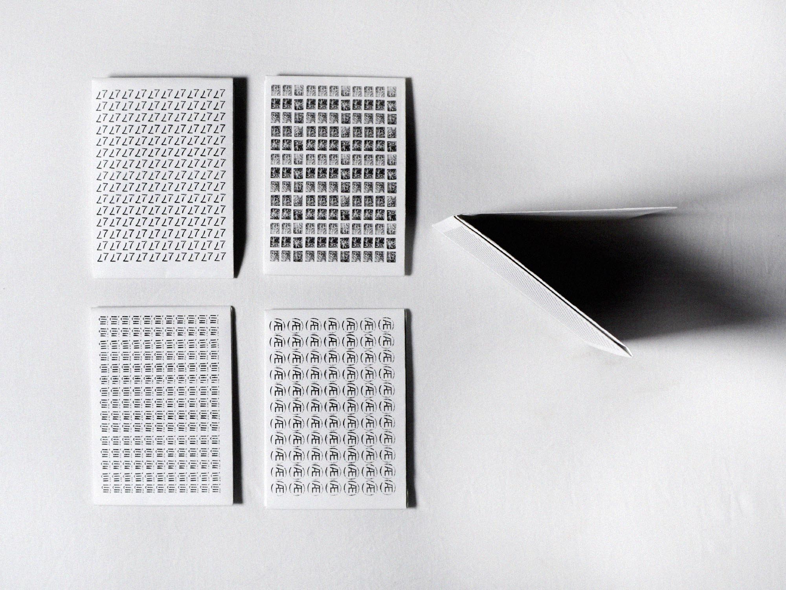
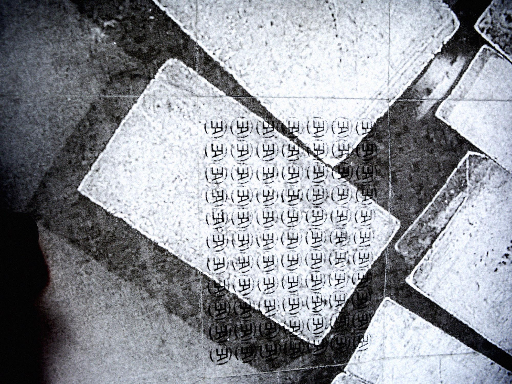
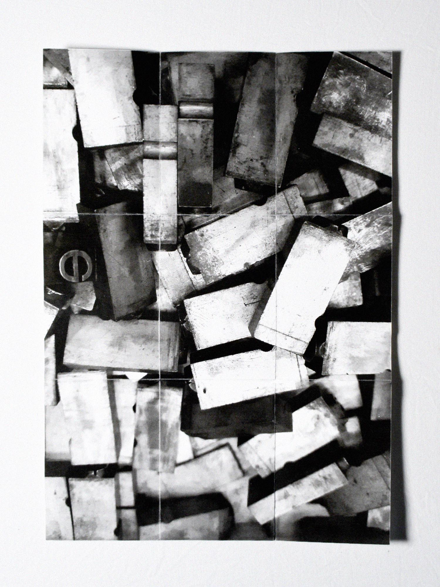
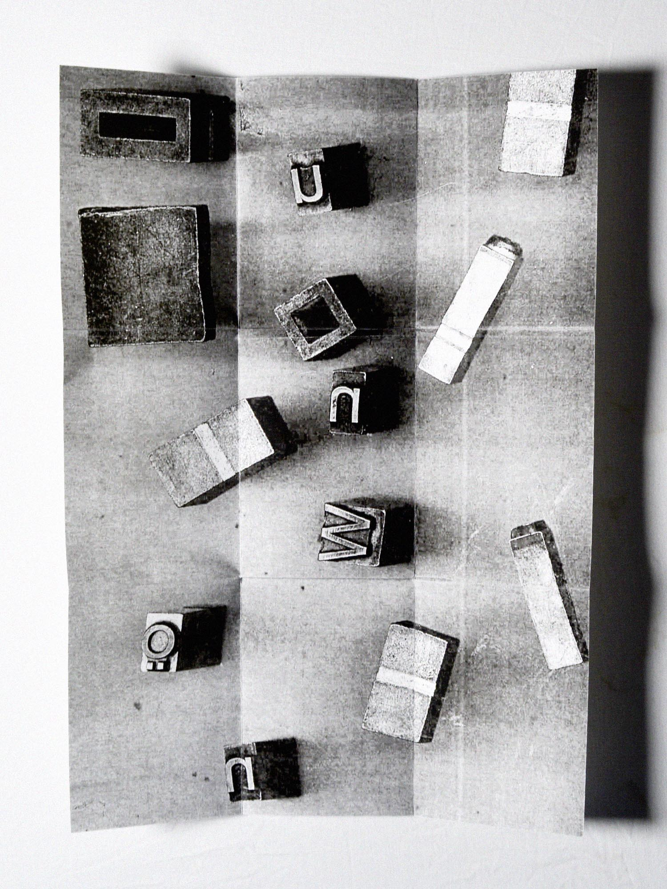
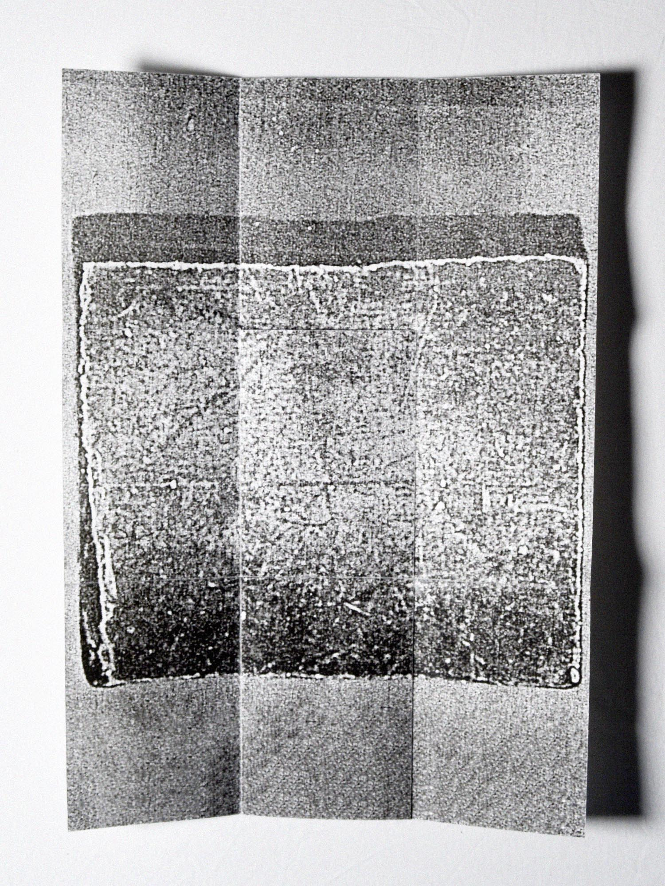
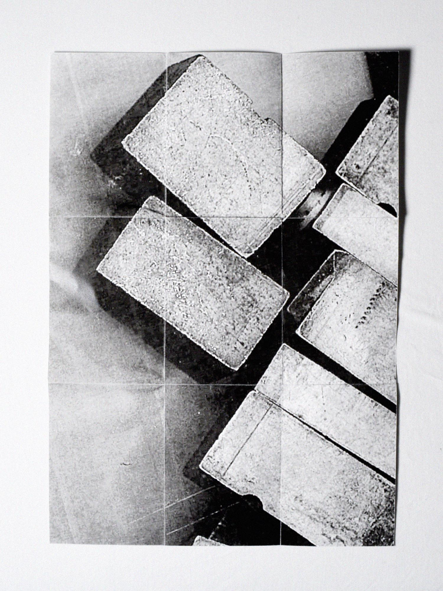
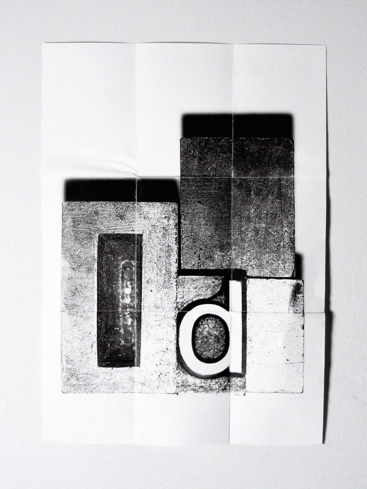
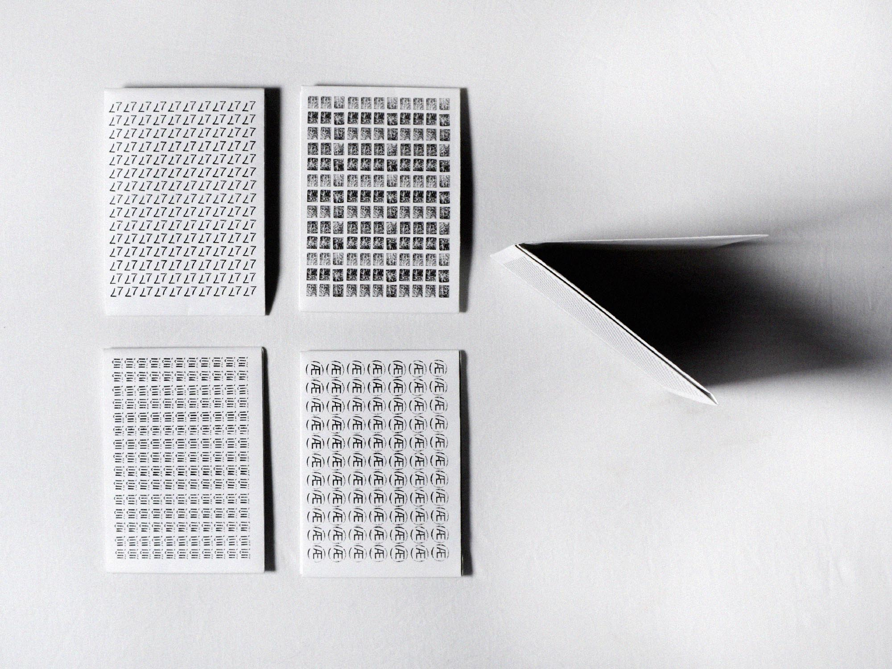
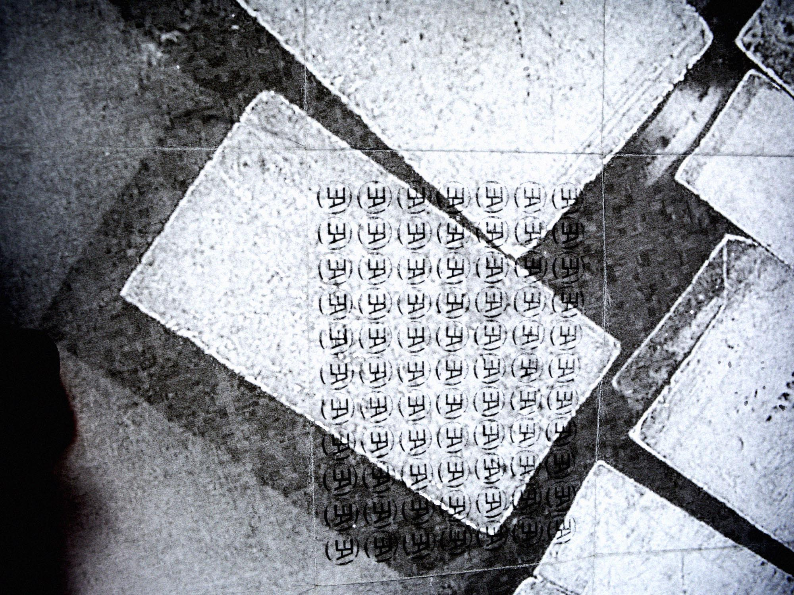
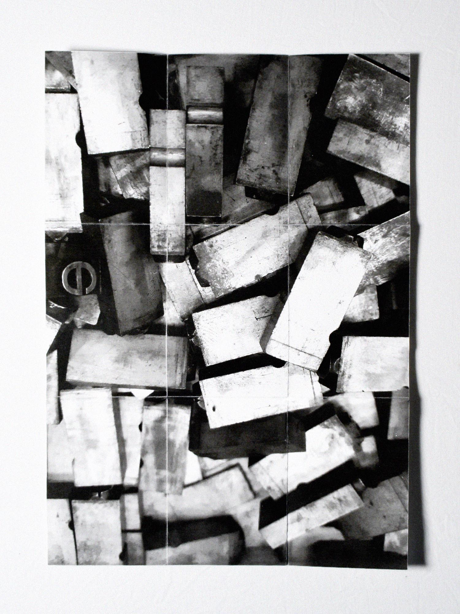
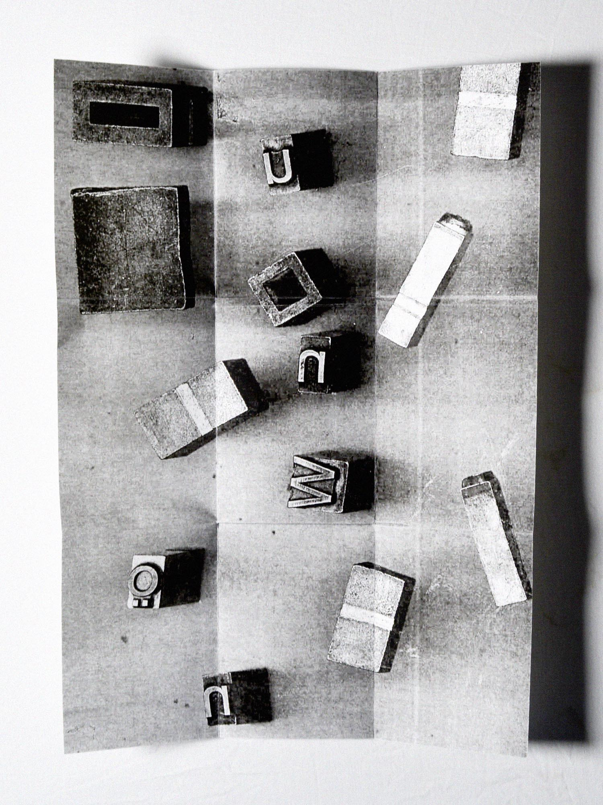
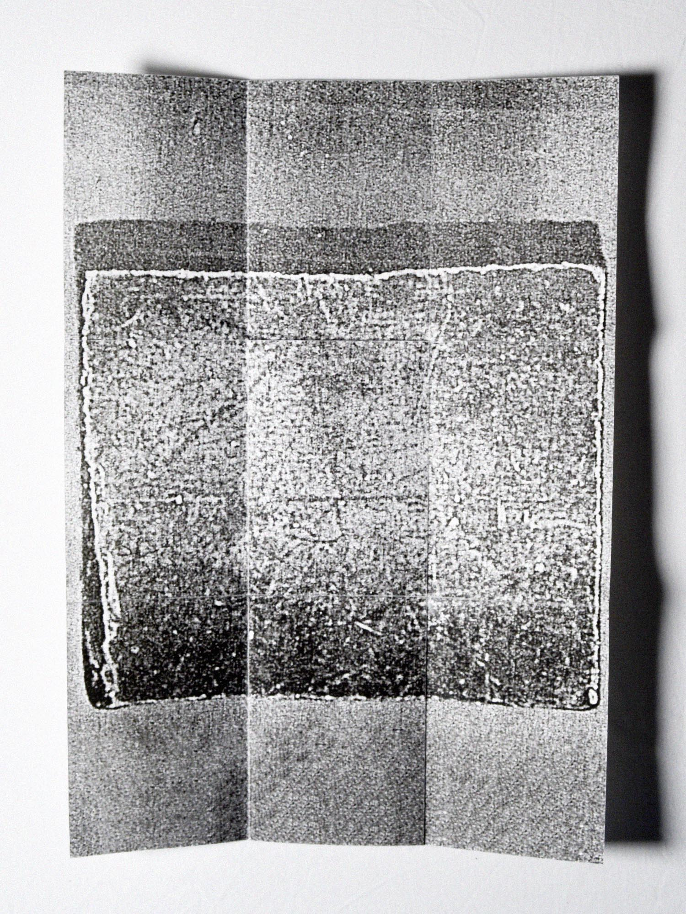
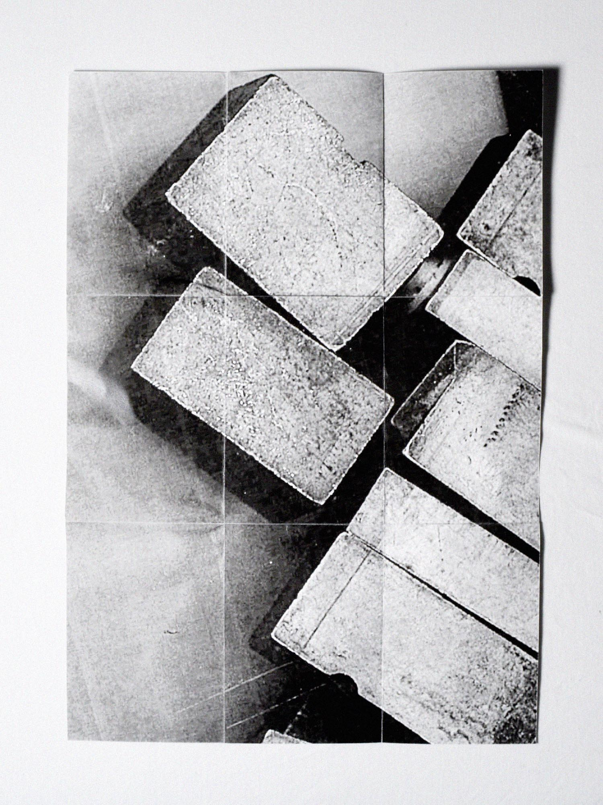
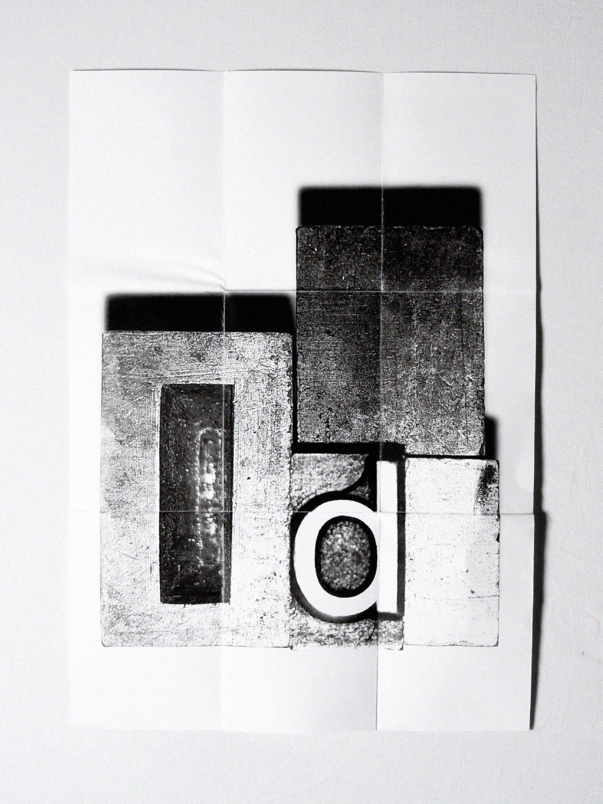
Loden Letters
Een analoge, typografische opdracht om loden letters te gebruiken zonder de daarvoor bedoelde functie.
De loden letters ‘upscalen’ met een scanner trok het voorwerp compleet uit zijn proportie. Hierdoor was het beeld helemaal niet meer herkenbaar en kan je door een kleine handeling al hele verschillende abstracte beelden schetsen.
Uiteindelijk heb ik deze uitkomsten gebundeld tot posters.